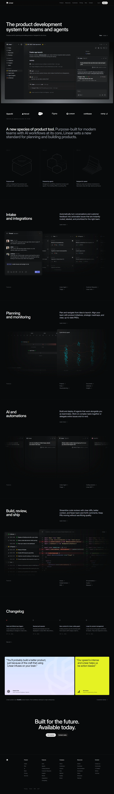

gpt-6.1-sol
交互和响应式反复自检，但图表与长页内容覆盖仍然不足。
22条命令记录 · 6个关键节点
给Agent一段七分钟的中文讲解录屏。讲解人从页面顶部一路滑到页脚，展示导航、产品界面、图表、代码编辑器和更新日志。Agent只有这段录像，需要从空项目写出一个能打开、能交互、适配手机的网页。
真实网站9个主要段落422秒 · 中文讲解Sol xhigh · NJU Link依赖预装 · 当前测试允许联网你要把一个在用的网页重新实现。没有设计稿，也没有源码；从录像里看布局、文字和操作，从讲解里听那些画面难以量准的参数，然后写成HTML、CSS和JavaScript。
原站操作录屏，1440×900，带中文TTS讲解。该预览只压缩画质，正式材料为原始录屏。
| 给Agent | 需要交付 |
|---|---|
| 简短TASK.md与一段带讲解的录屏。不给图片或字体，允许CSS图片占位与系统字体。 | output/site/index.html 及简短的 output/notes.md。整页都要做，演示和讲解提到的行为也要实现。 |
例如标题字号64、字重约510、字距约−1.4px；两个下拉面板同为860px宽、锚在同一位置；支持悬停与键盘聚焦；窄屏收起导航，并尊重系统的减少动态效果设置。验收同时看画面还原和这些具体行为。
| 分项 | 权重 | 检查内容 |
|---|---|---|
| IFS 页面覆盖与交互 | .30 | 49条检查，段内级联、各段独立；包含段落内容和实际导航操作。 |
| AFS 讲解参数 | .20 | 17条参数与约束，分别核查。 |
| CVG 文本覆盖 | .25 | 参考文字的严格匹配、归一化匹配与词召回。 |
| VFS 视觉 | .15 | 开启裁判时：几何60%与视觉rubric40%；关闭时仅用几何。 |
| RSP 响应式 | .10 | 桌面、平板、手机宽度下的页面与溢出检查。 |
满分构造解验证确定性判据可同时满足，不代表所有视觉细节已被覆盖。静音配对实验尚未完成，音频贡献仍待实测。
| 提交 | 状态 | 评分口径 | 总分 | 耗时 |
|---|---|---|---|---|
| Sol xhigh · NJU Link · 允许联网 | 已完成 | 确定性 | 86.53 | 27.7分钟 |
| 同一份Sol交付 | 已评分 | 含视觉裁判 | 86.16 | 同上 |
| oracle_max 满分构造解 | 自测通过 | 确定性 | 100.00 | — |
| 分项 | 确定性得分 |
|---|---|
| IFS 交互功能 | 91.84 |
| AFS 音频独有 | 100.00 |
| CVG 内容广度 | 55.92 |
| VFS 视觉保真 | 100.00 |
| RSP 响应式 | 100.00 |

先阅读每次运行的过程总结，再按需查看关键节点或完整记录。点击编号可直接定位原命令与输出。
这些是对执行过程的整理；模型自测与组织者正式验收分别标注，不把工具调用次数当作推理质量。
语音恢复后，转写明确出现“cycle time by agent”图表（#12）。最终自检却笼统报告功能区通过（#23），组织者验收在相应区段未检测到SVG、canvas或足够的条形图结构。问题可以定位到已获取要求与最终实现之间，而不应直接归结为没有听到讲解。
图表标题的后续检查依赖图表存在；前置检查失败会让同段检查级联失败。这里是一处前置实现缺失，不宜把每一个级联失败都当作独立能力错误。查看独立检查。
自测明确核对了首屏64px/64px、字重510、字距−1.4px、860px菜单和9个输入工具（#23）；但最终严格文案覆盖只有142/289，归一化后命中158条。页面有九段不等于保留九段中的全部信息。
结构与交互检查可以集中在少量参数上，长页文本覆盖则要求持续保留大量对象。未命中也可能来自文字节点拆分，因此不能把289−142直接称为缺失句数；应先区分内容删减与匹配方式。
该运行使用模拟设备实际走通MediaRecorder音频和视频路径（#26），这是有效的功能证据。它与图表、日期、局部标题字号的遗漏并不矛盾：自测覆盖的是不同要求。
更有针对性的验收应把每个区段的内容、数据结构和交互分开列为检查，而非以“整页可操作”作统一通过标记。这里不重新评分，只解释为何局部功能成功与整体失分同时存在。
下面列出当前最终交付未通过的检查。级联失败会标明前置步骤，不将同一前置问题重复解释为多项独立能力失败。
| 分项 | 检查 | 实际观察 |
|---|---|---|
| IFS | 页面里有图表（svg/canvas 或 ≥5 根条形） | svg0 canvas0 条形0 |
| IFS | 图表标题命中 Cycle time | 前一步未过，段内级联 |
| IFS | 有一个 ≥40px 的大标题 | 30px |
| IFS | 命中 ≥2 个带年份的日期 | 前一步未过，段内级联 |
| JUDGE | 字体是无衬线，字形接近 Inter 这类几何无衬线 |
文本严格覆盖命中 142/289 条，归一化后命中 158 条，文本覆盖得分 55.92。这是本轮主要失分项。该指标对文字节点拆分仍敏感，未命中不全部等于内容缺失，需要结合截图判断。视觉裁判的失分属于图像判词，原始回复可在评分明细中审阅。
构造解必须能拿确定性满分；视觉裁判失败时停止评分，不能把错误回复当作全部不通过。每轮评分独立保存截图和裁判原始回复，避免并行自测覆盖截图。当前全页检查仍有粗粒度结构阈值，不能等同于完整产品验收。